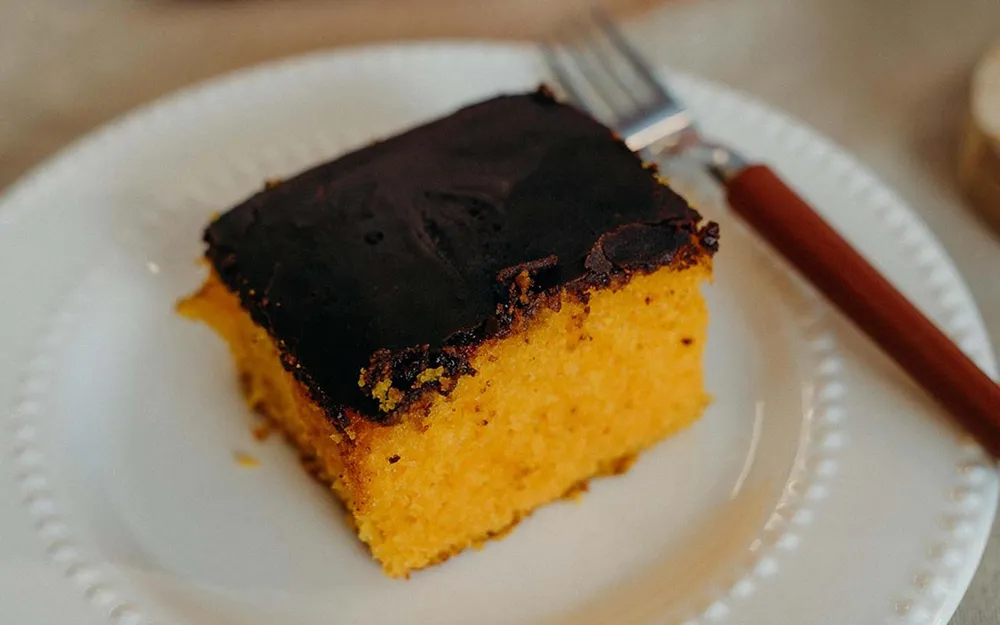
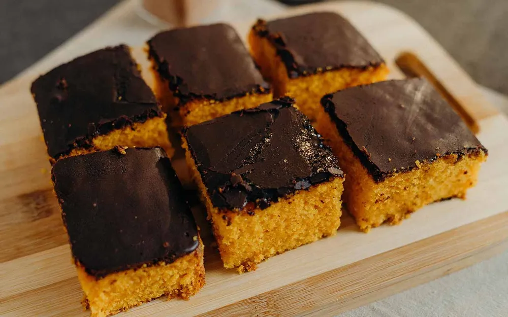
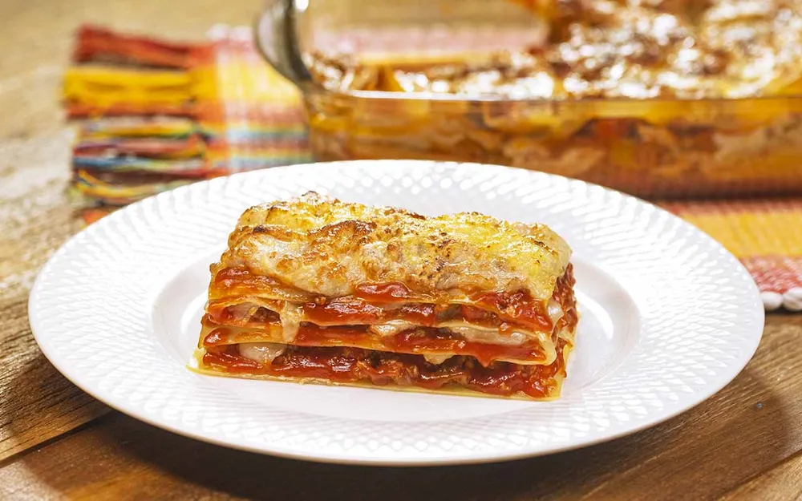
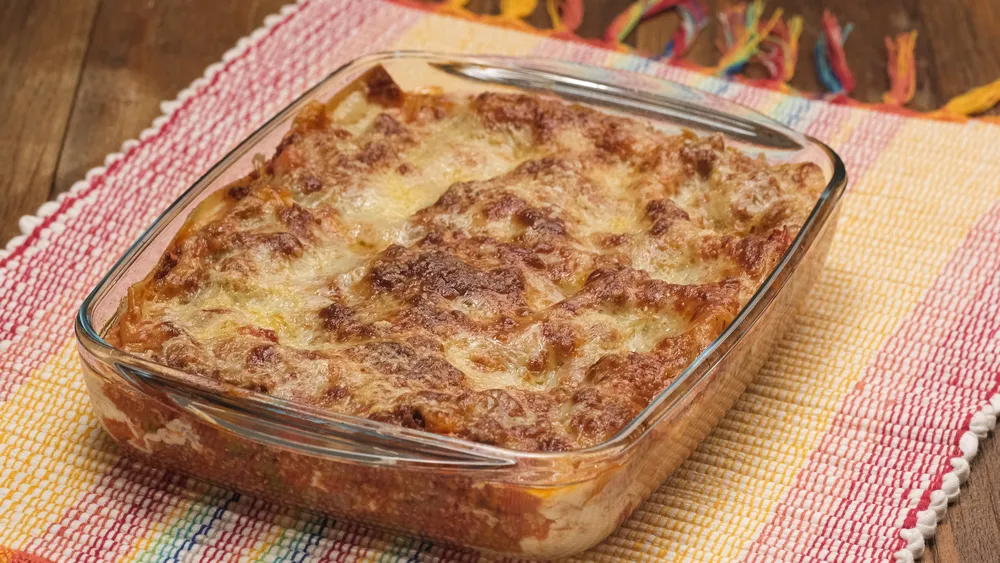

11.46.50_ff3c608b.png)

Good Cheefe: O Seu Destino Culinário Online
Em um mundo onde a gastronomia se tornou uma paixão global, encontrar a inspiração certa para sua próxima
refeição pode ser um desafio. É aqui que o Good Cheefe entra em cena, como um farol brilhante na vastidão da
internet gastronômica. Este site de receitas, um verdadeiro paraíso para entusiastas da culinária, oferece
uma experiência única e envolvente que irá encantar tanto chefs experientes quanto cozinheiros iniciantes.
.png)
Receita do Bolo de Cenoura
Saiba como fazer um bolo de cenoura fácil no liquidificador que leva poucos ingredientes e fica pronto rapidinho. O bolo de cenoura é uma opção simples e prática para o café da manhã, lanche da tarde ou para uma ocasião especial com famílias e amigos. Essa receita é feita no liquidificador e fica pronta em menos de 1 hora. É ideal para quando você está com pouco tempo para cozinhar. Fácil de fazer, o bolo de cenoura leva ingredientes que você provavelmente tem em casa: farinha de trigo, açúcar, óleo, fermento, cenoura e ovos. Para finalizar, você pode preparar cobertura com chocolate em pó. Confira como fazer!

🎧Ouça a receita completa:

Ingredientes
Massa
- 1 xícara (chá) de óleo
- 3 cenouras médias raladas
- 4 ovos
- 2 xícaras de açúcar
- 3 xícaras de farinha de trigo
- 1 colher (sopa) de fermento em pó
Ingredientes
coberetura
- 2 colher (sopa) de manteiga
- 1 xic. chocolate em pó
- 1 xíc. de açúcar
- 5 col. de leite
Dica
Despeje a cobertura quente sobre o bolo. Assim, vai criar uma crosta durinha.

Lasanha de carne moida
Como fazer lasanha de carne moída:
A lasanha é um prato bem versátil,
que pode ser feito com ingredientes e molhos diversos. Uma das receitas mais tradicionais é a lasanha de
carne moída. É a opção ideal para o almoço em família, um jantar romântico e pode ser servida até mesmo
na ceia de fim de ano.

🎧Ouça a receita completa:

Ingredientes
Molho Abolonhesa
- 1 xícara (chá) água
Para montar: - Massa de lasanha FRESCA
- 300g Muçarela fatiada
- 300g Presunto fatiado
- Queijo Parmesão fresco
Ingredientes
Lasanha
- 1 colher (sopa) de óleo
- 2 dentes de alho
- 1 cebola média picada
- 1 kg de carne moída
- Pimenta do reino (a gosto)
- Orégano (a gosto)
- Tempero baiano (a gosto)
- Colorau (a gosto)
- Sal (a gosto)
- 1 sachê de molho de tomate
- 1 lata de extrato de tomate

Panqueca Americana
Confira essa receita de panqueca americana deliciosa! Uma das comidas mais comuns no breakfast, o café da manhã dos Estados Unidos, ela é muito versátil e vai te proporcionar uma refeição muito especial!
Ingredientes
(8 porções)
- 1 e 1/4 xícara (chá) de farinha de trigo
- 3 colheres (chá) de fermento em pó
- 1 xícara (chá) de leite
- pitada de sal
- 1 colher (sopa) de açúca
- 2 ovos levemente batidos
- 2 colheres (sopa) de manteiga derretida
- óleo

Milk Shake
Um milk shake é uma receita perfeita para aqueles dias de calor! Veja como preparar essa delícia e tenha uma nova receita favorita!
Ingredientes
(1 copo)
- 3 bolas de sorvete de flocos
- 1/2 copo de leite gelado
- 1 copo de chocolate ralado
- calda de chocolate
- raspas de chocolate